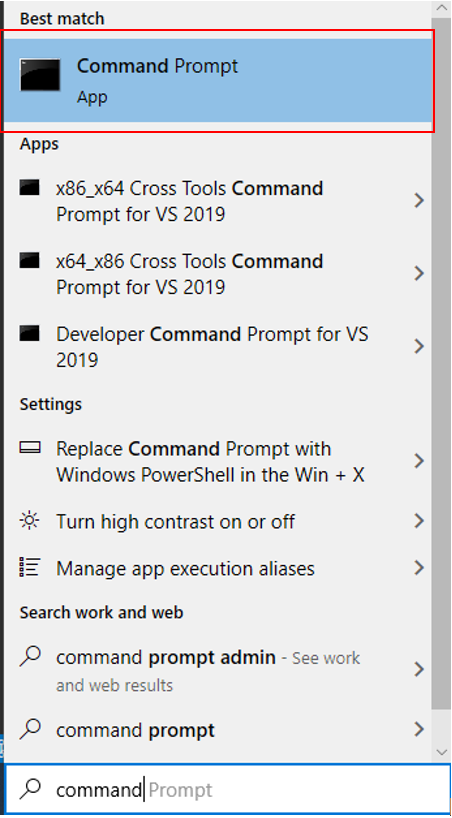

Python Installation Guide
Hello All,
Please follow this page and download Python and Jupyter ONLY if you are unable to install Anaconda
Section 1: Download Python Installer
-
Follow this link. Click on Download Python x.x.x (Download the latest version that you can see.)
2. Click “Save” to start downloading the Python Installer

Section 2: Install Python
Once you have downloaded the installer, you can launch the installer and follow the instructions as prompted. Please take note on Step 2!
-
Navigate to the directory where the Python Installer is downloaded. Double click on the installer as shown in the screenshot below.

-
Untick 'Install launcher for all user (recommended)' and tick 'Add Python x.x to PATH'. Click Install Now and follow the subsequent instructions.
Section 3: Install and Run Jupyter
Once Python is installed, you may run the following to install and run jupyter notebook.
-
In the search bar, search for command prompt and open it.

-
Type "pip install notebook" and hit enter. (Alternatively, you may type pip install jupyterlab". jupyterlab is another flavour of jupyter notebook.)
-
Once it is completed. Type "juypter notebook" to run the notebook (or "jupyterlab" if you installed jupyterlab). A tab will automatically open in your browser. If not, type localhost:8888 into any browser.